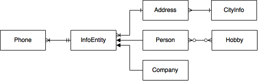
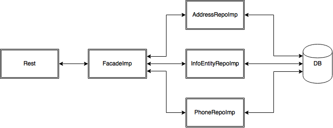

When we first started this CA we felt we didnt have the nessary time to complete this task.
But when we started working on the CA it became more manageable.
We ran in to alot of problems with the test and especially the rest assured test.
this was because of the poorly descirbed errors messages by maven when run thorugh netbeans.
But all in all we have great fun and learnt alot about Rest, javascrip and Ajax.
We startede by making the backend.
we chose to make the entities and thier relations from java.

Here you can see how our relations.

Here you can see our facades
We made facades to InfonEntity, Phone and address. Then we made a main facade when we call the 3 other mapper facades.
When our Rest calls a metode in the main facade, the main facade then calls one of the 3 mapper facades. The mapper facade then get or makes the chance in the database and returns either a Person or a Company.
We made two REST APIs around what we think are the two most important entity classes.
Those are the Person and Company entity classes, which inherit from InfoEntity,
from where we have dependencies to many of the other entities, such as Phone and Address.
The REST APIS call our facade layers, which then use JPA to make changes to our database.
In our REST APIs we use the standard GET, POST, PUT and DELETE methods to make our methods.
We have get all Persons/Companies, get Person/Company by id/cvr, get Person by Zip, create Person/Company,
edit Person/Company, Delete Person/Company.
SÆT IND HER!
At first we made a class called JSONConverter, where we made three methods.
The first one was getJSONFromObject, where we put a object as a parameter
and we use the GSON converter to make a string in the JSON format.
The second one is also called getJSONFromObject where we put a List of objects,
where the GSON converter does the same thing,
only this time it is a array of objects instead of a single object.
The last one is called getObjectFromJson, where we reverse the process
and use a String that is in JSON format to make an Object.
Later we found out that we didn't need the JSONConverter,
since the response object does the same thing when it is sent as a response.
So we have methods in our REST API that use both methods.
We have testet on parts of the system with JUnit.
We have testet to create a Person, with Phone number, Hobby and Address and Create Company with address. In Before Class.
We have choosen to test the following methodes.
Here we test if we can get a specific person by his id.
Here we test if we can get all the persons form a specific zip
Here we test if we can get a person by a specific hobby
Here we test if we can get a specific company by its CVR-Number
Here we test if we can add a new hobby to a person
The main purpose of these test was to see if our main facade did the right thing in the database.
So when we called a methode, we got the correct answer in the right object.
This made it alot eaiser to use it later on in the program.
We have also see that in some way it could be useful to make the test first.
Hvis det bare skal vær tekst.
Good
Bad
Here you can see a more specific who made what. But in general we helped each other.
Made the facade, overlooked error handling, stood for uploading the server to Digital Oacen.
Made some of the entities, Rest for company, Error handling and Documentation.
Made Rest for Person, Rest assured test and the frontend site.
Made some of the entities, Junit test and Documentation.